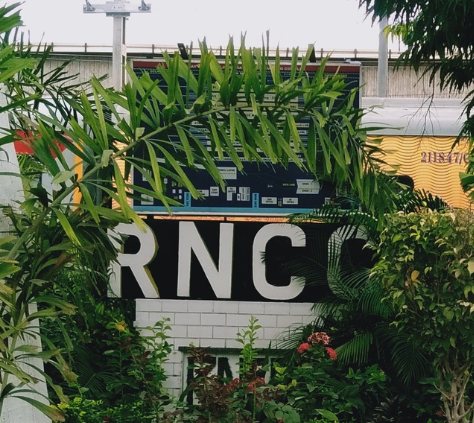
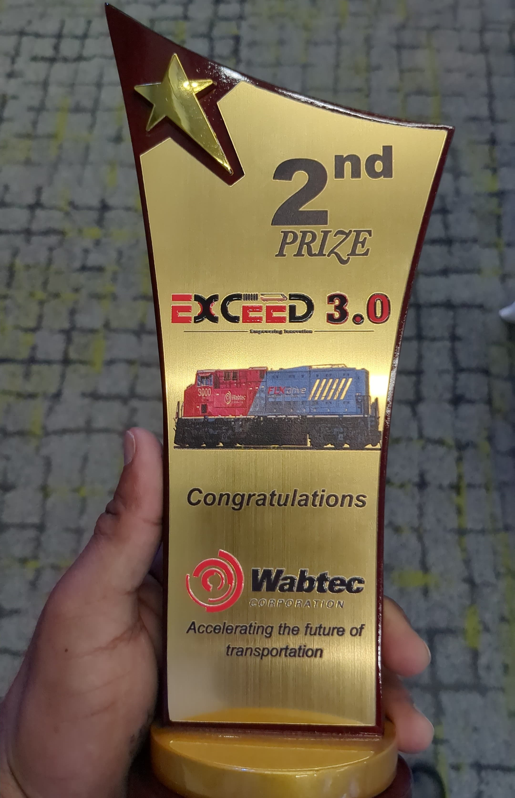
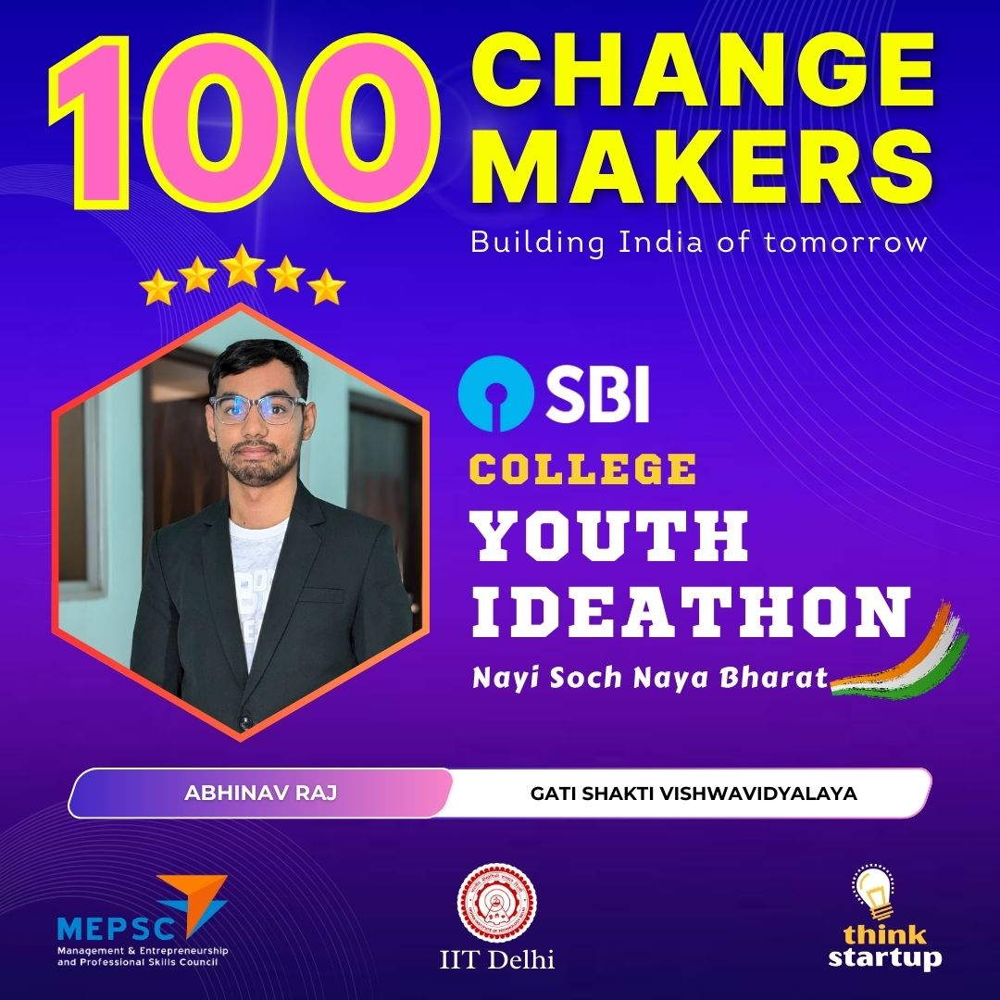
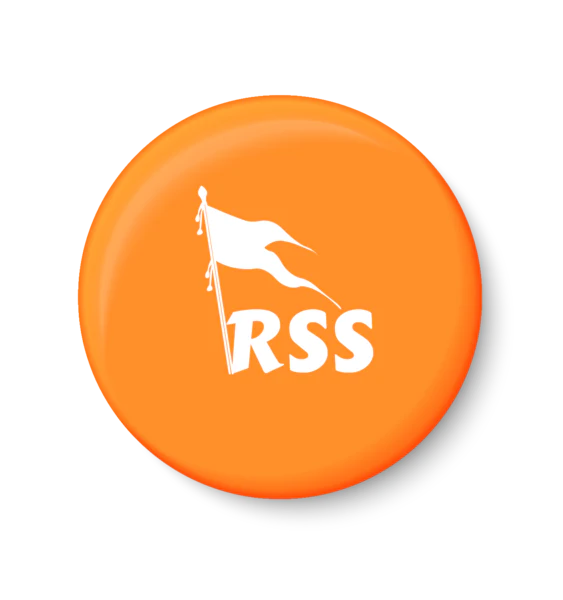

Internships

Indian Railway Intern(ECR)
RNCC, Patna, Bihar
May 2023 - June 2023
I did an internship with Indian Railways, where I gained hands-on experience with the components of LHB (Linke Hofmann Busch) coaches. I learned in detail about the pneumatic brake system used in trains and how it functions. My training included understanding the testing procedures to ensure the brakes operate safely and efficiently.
This experience gave me valuable technical knowledge about railway coach systems and their maintenance.
Different arts of LHB coach:
WSP(Wheel Slide Protection Device)
Air brake system and parts
Failure Indication and Brake Application Device(FIBA)
Pressurized bio-toilet system
NCRTC Intern
May 2024 - June 2024
During my internship at NCRTC, I gained in-depth knowledge of modern railway signaling and communication systems.
I learned about the European Rail Traffic Management System (ERTMS), including GSM-R/LTE-based communication and the features of
ETCS Level 1 and Level 2, which enhance train safety and efficiency. My experience also covered various signaling components in RRTS,
such as color light signals, buffer signals, route indicators, and onboard equipment like the train operator cab system. Additionally, I
explored trackside equipment like balises, point machines, axle counters, and essential control centers such as TMS, OCC, and BCC, which coordinate seamless train operations.
This hands-on exposure to LTE systems, signal equipment room cubicles, and advanced railway technologies provided me with valuable insights into railway automation and infrastructure management
ERTMS
ETCS
RRTS Onboard Equipment
Event Experiences

Participated in Wabtec Exceed 3.O
Feb 2025
As the first runner-up in the competition, representing Gati Shakti Vishwavidyalaya, Vadodara,
I had the opportunity to present my project on ‘Automated Train Scheduling and Routing.’ This experience
allowed me to showcase my understanding of railway automation, optimization techniques, and the integration of technology in
train operations. This achievement was a significant milestone in my learning journey, enhancing both my technical and presentation skills.

College Youth Ideathon
April 2025
I participated in my college's Youth Ideathon and was selected among the top 100 ideas for developing MedMap, a GIS-powered, AI-driven emergency healthcare platform. MedMap connects patients,
ambulances, and hospitals in real-time, providing live tracking of hospital resources and optimizing ambulance navigation to reduce response times by 30-50%. It integrates with government emergency services,
blood banks, and pharmacies, enhancing healthcare accessibility and disaster management.

Machspeed Madness
Annual Tech-Fest (Epitome25, GSV)
March 2025
I participated in the Machspeed Madness RC car competition, where my team designed an RC car using ESP32-to-ESP32
communication for wireless control. This experience enhanced my skills in embedded systems, wireless communication,
and real-time vehicle control. Competing against strong teams, we secured 2nd position, showcasing our innovation
and technical expertise. The event provided valuable hands-on learning in IoT-based and teamwork, strengthening my
passion for robotics and embedded technology.

Robotic Competition
ISRO
Jan 2025
I participated in the ISRO Robotic Challenge-URSC, where my team developed an Autonomous Navigation for an Aerial Vehicle (ANAV) system.
Through this project, I gained hands-on experience in communication systems, integrating various sensors, and designing
the system architecture and algorithms. This challenge enhanced my understanding of autonomous robotics and real-world applications
of advanced navigation technologies.

RSS
RSS
2019
I served as the coordinator for children up to age 18 for an RSS event on Sharad Purnima, successfully organizing the event,
which included an RSS drill and a showcasing. This experience enhanced my leadership and event management skills while fostering
teamwork and discipline among the participants.